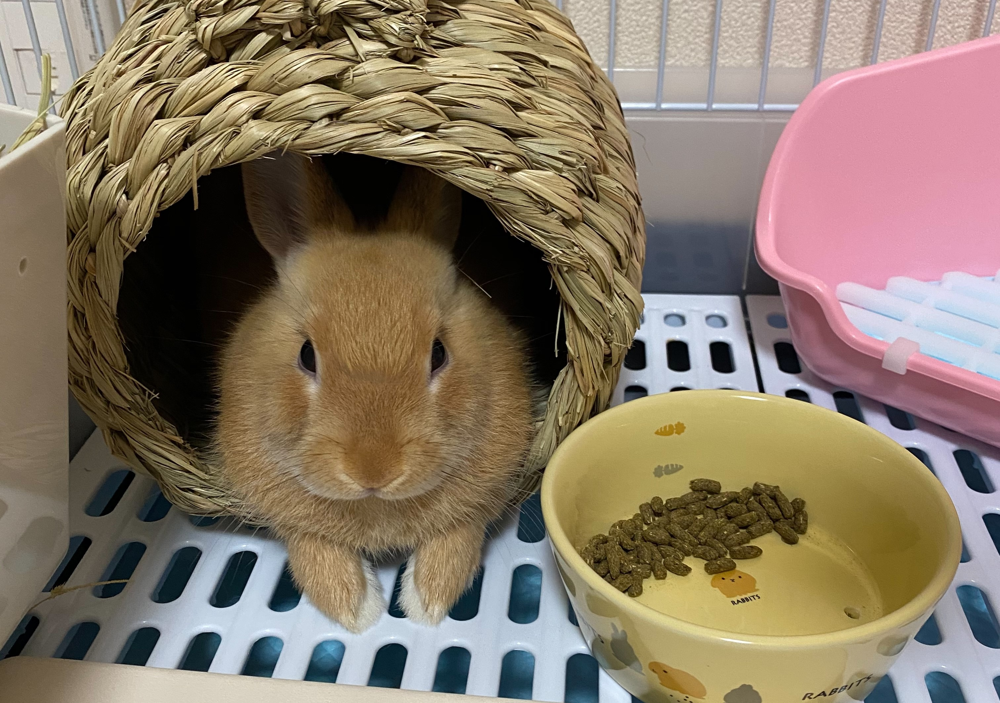

うさぎといえば、長い耳！の印象が強いと思います。他にも高く飛ぶ姿。色々なイメージがあると思います。ですが、飼おうか迷ってる方、悩んでいる方は実際の飼っている方の意見も知りたいのではないでしょうか。
そこで！今回は、私の実体験をもとに色々なことをご紹介していきます。
うさぎってどんな動物？
うさぎはみんな怖がりで繊細です。
生活の中で大きな音を出してしまうと、自分のゲージに戻り、丸くちじこもってしまいます。
爪切りに行く際、車で移動している際も常に怖がっています。家に着くとびくびくと震えながらゲージの中で１時間ほど引きこもってしまいます。
大きな音や、驚かせてしまうことは生活の中でしょうがないことではありますが、少し気にしてあげるとウサギへのストレスも減ると思います。
皆さんのイメージではニンジンが大好きなイメージはありませんか？トトの場合はニンジンはあまり食べず、ウサギ用のおやつを好んで食べます。
ウサギにも好き嫌いがあるようで、おやつをあげようとしてもそっぽ向いたり…全く食べてくれないことも多々あります。
ですが、おやつ等ばかりを与えすぎると体に良くないので気を付けましょう。
そして甘えん坊さんです！慣つくというイメージがあまりありませんでしたが、自ら寄ってきて撫でてアピールをしてきます！
それがとても可愛いのです…。
トイレは覚える？
個体差はあると思いますが、基本的に覚えます！
トトの場合は、家に来た当初は全く覚えず、そこら中にうんちやおしっこをしてしまっていました。
私がトイレを覚えさせる為にしたことは、そこら中にあるうんちを全部回収してトイレの中に入れることを続けました。
時間は少しかかりましたが、うんち、おしっこ共にトイレでしてくれるようになりました！
最初のうちはそこらへんでしてしまうので、絨毯などが汚れてしまうのは覚悟のうえでウサギを飼いましょう。
ウサギを飼うことは大変？

大変です。
先ほども話しましたが、１つめに大変なのがトイレです。
最初はそこら中にうんちやおしっこをします。固形のうんちであれば汚れは残らず、匂いもあまりしないので良いのですが、
おしっこは匂いもきつくシミも残ります。
ですが最初はしょうがないことなので、怒らず、ゆっくり覚えさせていくようにしましょう。
2つめに大変なのが、何でも噛んでしまうことです。
壁の張り紙、配線。何でも噛んでしまいます。携帯の充電器は何度か買いなおしています…
先ほどのトイレとは違い、「噛まない」を覚えることはありません。
噛んでしまう物によっては危険なので、飼う立場である私たちが注意をしなければいけません。
「怒る」ではなく、噛まない為に柵を貼るなどの対策をしましょう。噛んでしまうことはしょうがないことです。
意外に抜け毛が多い。
うさぎは1年に最低2回の換毛期が訪れ、温かい冬毛と涼しい夏毛の入れ替わりが起こります。そのたびにごっそりと被毛が抜けるので、換毛期はこまめな掃除が必要になります。
特に長毛種は毛量が多い分、抜け毛の掃除が大変です。
電気代が高くなる。
うさぎは温度変化に弱いため温度を一定に保つことが必要になります。
暑い時期、寒い時期は一日中エアコンをつけっぱなしの為、電気代が跳ね上がります。
飼ってみて良かったことは？

癒されます。
これが一番です！
見ているだけで癒されます。寝転ぶ姿、寝ている姿、ご飯を食べている姿。全てが可愛いです。
ととは撫でられることが大好きなので、撫でられている時の顔が気持ちよさそうでとても可愛い…
撫でるのをやめてみると「もっと撫でて！」とアピールするように、ジーっと見つめてきて鼻先で手を突いてきます。
うさぎは飼いやすい動物だと思います。
ウサギはお散歩用のサークル内での活動にとどまってくれるので、ウサギ用のスペースさえ確保すればこれまで通りの生活を送ることができるのがいいですね。
鳴き声がないので騒音の心配もありません。
しっかり飼える方であれば、最高の家族になると思います！
散歩は必要？
外の散歩をしなくても問題ありません。
ウサギによっては、うさんぽ（「うさぎ」と「さんぽ」を組み合わせた「うさぎの散歩」）が好きな子もいます。
トトは何度かうさんぽしたことがあります。
ですが、うさんぽを好まない子もいます。ストレスの原因になってしまうので、気を付けましょう。
ケージで飼育されているうさぎは、運動やストレス解消のため1日30分程度のへやんぽをさせます。
運動はうさぎに必要なものですが、部屋を散歩させれば十分なので、外の散歩に行けなくても問題はないのです。
まとめ
色々話してきましたが、私にとってトトは最高の家族です！
大変なことも勿論ありますが、それ以上にトトから癒しをもらっています。
癒されることは勿論。大変な面があることを理解し、飼うか決めましょう。
家族になったときはしっかりコミュニケーションを取りましょう！